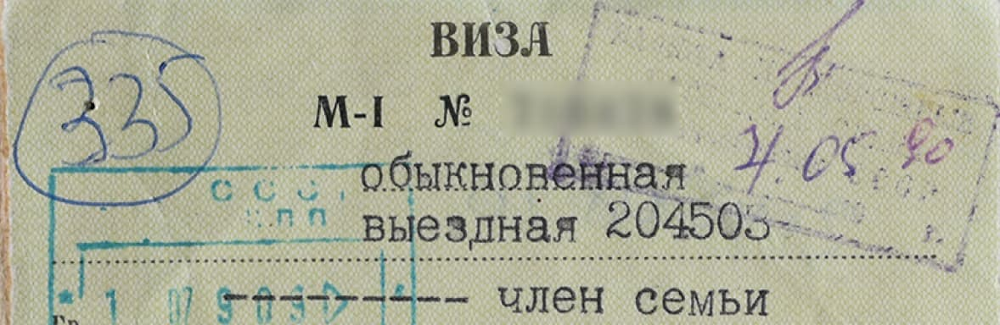
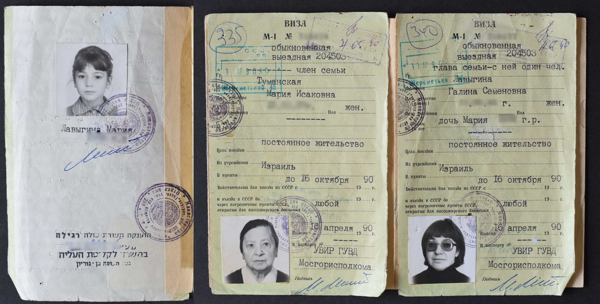
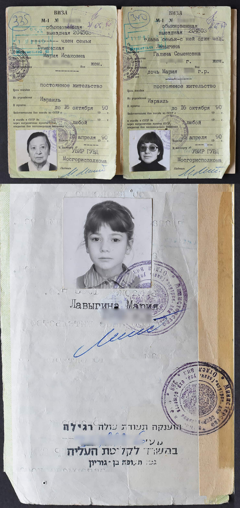

Все будет хорошо
Летом на даче Екатерина Ивановна опять меня зовёт погадать И на этот раз она мне радостно сообщает: “все будет хорошо.” Я же ей о своих планах ни в первый раз ни сейчас не рассказывала. Леденящие сны тоже перестали сниться.
Маша на даче, середина 80-х.
Сначала надо было получить из Израиля приглашение от родственника. Тем, у кого родственников не было надо было каким либо способом передать свои данные в Израиль.
Один из способов был подойти к голландскому посольству в Москве (в то время между Советским Союзом и Израилем не было дипломатических отношений, соответственно не было и израильского посольства). Посредником выступала Голландия.
Надо было подойти к посольству и бросить через забор под недружелюбными взглядами милиционеров записочку с твоими данными. Как же это было отвратительно, унизительно ещё и страшновато. Хотя и было смягчение относительно эмиграции, но все же власти могли сотворить с тобой все, что угодно.
Письмо, открывшее дверь
В один прекрасный день я получаю 5 писем От “родственников” . Наугад выбираю одно. Это оказался племянник Миши Копелиовича. Узнала я об этом уже в Израиле. Забавно, но этого человека я так никогда и не видела, хотя знаю о нем от Миши и ещё от моего приятеля “отказника”, который ещё в Союзе был его товарищем по совместному подпольному изучению иврита.
С этим “приглашением” можно было идти в ОВИР для получения визы, предварительно выполнив массу требований. Отказаться от советского гражданства, сдать трудовую книжку в отдел кадров Университета, отказаться от квартиры (все действия с квартирой были запрещены, даже обменять на меньшую и получить хоть какую-то компенсацию запрещалось).
Отправить багаж практически оказалось невозможным. Многомесячная очередь на таможню.
“Галя, ну нам же самим не хватает”
Мои знакомые смогли отправить свои вещи дав взятку таможенному начальству - золотые часы “луковица” Буре. Мы могли взять с собой по 40 килограмм на человека, поэтому ни о мебели, ни об утвари, ни о книгах вопрос не стоял. Только насильные вещи. Помню, как кладу машины колготки в коробку, потом выкладываю - перевес. Бывалые люди подсказывают - лучше всего достать коробки из под яиц - они самые легкие. Игорь “договаривается” с вечно пьяным грузчиком магазина и он “позволяет” взять несколько. Можно посылать посылками. На международной почте висит список вещей запрещенных к посылке.
Прошу свою подругу по МИХМу, где вместе мы учились, посмотреть список. Она жила близко от почты. Спрашиваю: ну что? Она говорит: “нельзя вещи из хлопока, да почти все нельзя.” Я возмущаюсь. И тут моя подруга выдаёт: “Галя, ну нам же самим не хватает!” И меня оторопь берет. Что значит самим не хватает? Тебе не хватает моего халата, который я сама сшила!? Говорю: “Жанна, ты так хорошо меня знаешь, знаешь мою семью. Я и моя мама, мы ничего не украли, это наши вещи , мы их купили на нами заработанные деньги”. Она немного рассердилась на меня и мы не стали продолжать разговор. Эта подруга ко мне хорошо относится, мы и сегодня поддерживаем отношения.
Оказалось, что и свои документы: дипломы, свидетельства о рождении детей и своё и т. п. взять не можем. Игра продолжается - относишь их в Голландское посольство и уже в Тель-Авиве их можешь получить.

Наше почтовое отправление из Москвы в Реховот. Кстати, одеяло, на котором стоит мешок мы купили уже в Израиле по олимовской скидке. Пользуемся им до сих пор. “Эйхут меод това!” (Очень хорошее качество!)
Трудовую книжку...
А помните, трудовую книжку обязан сдать в отдел кадров последнего места работы. Таким образом подтвердить свой стаж, место работы и должность тебе нечем. И когда Россия в 2017 году нам, уехавшим из Советского Союза и лишенных гражданства будто мы какие-то преступники, вдруг согласилась платить заработанную пенсию оказалось, что самого важного для этого документа (трудовой книжки) и нету. То есть сначала отобрали, а теперь ее и требуют.
Моя бывшая сотрудница и приятельница попыталась выудить мою трудовую книжку из отдела кадров. Но кадровичка заявила, что у неё записано, что я забрала свою трудовую книжку и при это высыпала на мою приятельницу, все что она думает об “этих”. Я извинилась перед приятельницей, за то, что ей пришлось выслушать.
Короче я получила за 30 лет стажа пенсию 2500 рублей, это примерно около 30 долларов в месяц. Ой как же тебе не стыдно, матушка Россия. При этом заработанную пенсию у моей мамы отобрали, у 83-летней старухи отобрали!
“Воссоединение семей” Игра продолжается
Помню мучительное омерзение, когда заполняла в ОВИРе бланки с просьбой о визе. Омерзение от невозможности не играть в их игру “воссоединение семей”. В пункте “остающиеся в России родственники” пишу - брат. В пункте “с кем воссоединяюсь" пишу - двоюродный брат. И страх тоже, потому что воспринимаем государство как карательный, а не регулирующий аппарат.
Я только сейчас поняла всю абсурдность документа выездная виза. Есть случаи, когда человек не имеет права покинуть страну ( долги, правонарушение, владение государственными секретами и т. п.), ну тогда просто закрывают ему, персонально ему, выезд. Все остальные не должны просить разрешения выйти из своего дома. А разрешение, визу даёт или не даёт тот в чей дом вы стучитесь.
Всё, заканчиваю с прологом “почему”. Надеюсь мне удалось объяснить “почему”.
С большим удовольствие перехожу от мерзопакостей советской действительности к трудной, ой какой трудной, но очень интересной жизни в Израиле.
Нам повезло
Нам повезло, визы мы получили примерно через полгода. На нашу долю не выпали ни отказ, ни тьфу-тьфу, тюрьма, ни психбольница.
Отказников не брали на работу по специальности и многие работали дворниками. Если же вдруг чудом или по недосмотру органов им удавалось найти работу по специальности или близко к ней, то через некоторое время их настигало КГБ и требовало уволить отказника.
На одном из заводов работало несколько отказников, были они специалистами высшего класса. Они отлично наладили заводскую систему дигитального управления. Директор был счастлив, называл их “мои дорогие евреи”. Да и они сами радовались, видя плоды своих трудов. Но через некоторое время КГБ велел всех уволить. Директор был вынужден подчиниться приказу.
Раз в полгода отказники подавали новую просьбу на выезд и получали ответ “Ваш отъезд мы считаем нецелесообразным”. И так много лет. Я знаю таких, кто 9 лет был в отказе и таких, кто 16.
 Виза в Израиль.
Хранитель истории
Вещи упаковали. Магазанники согласились взять в свой багаж (помните “луковицу” Буре) немного нашей посуды. В Израиль через 2 года пришли почти одни осколки.
Эта посуда была нам дорога не как утварь, а как память о нашем житье - бытье. Это был очень изящный сервиз с большим заварным чайником - свидетель наших праздников, наших застолий, нашей жизни.
У этого сервиза была своя история. Купил его мой папа в голодные послевоенные годы. Его сотрудник, помню его фамилию - Орлов, говорит папе: “Я пойду с тобой, хочу посмотреть, какой скандал тебе устроит Мария Исаковна, когда ты принесёшь эту роскошь в пустой, голодный дом.” Моя мама увидела сервиз, всплеснула руками и воскликнула: “Какая прелесть!” Орлов был разочарован, папа торжествовал.
Ну как было не взять с собой эту семейную реликвию!? И вот осколки, наш любимый чайник тоже пострадал. Я его подклеила, пользоваться им нельзя, а выбросить не могу - хранитель истории.